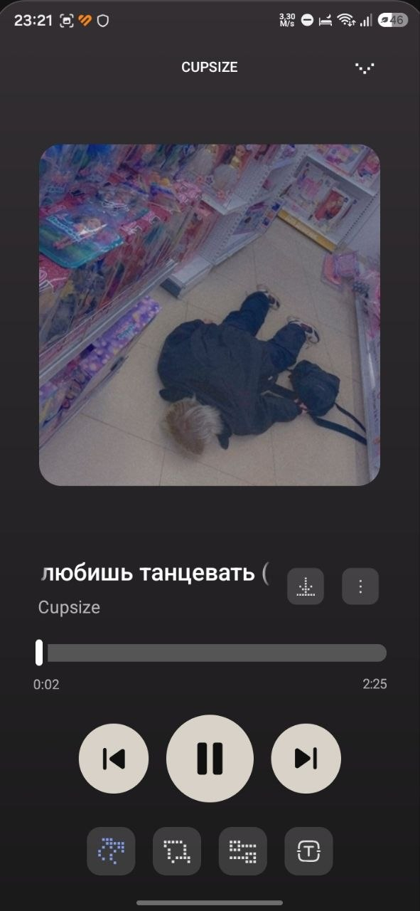
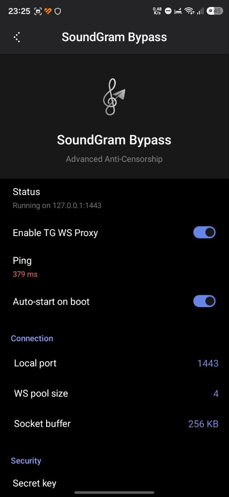
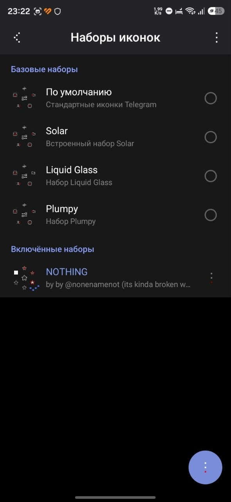
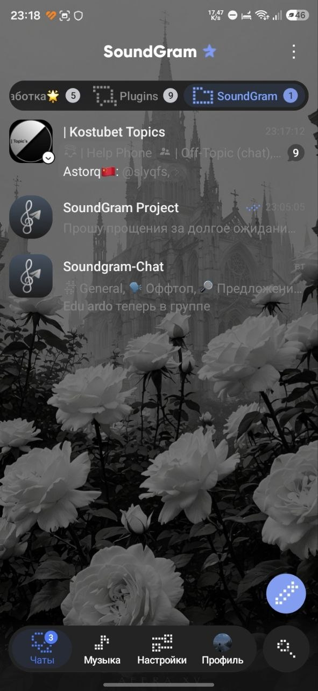
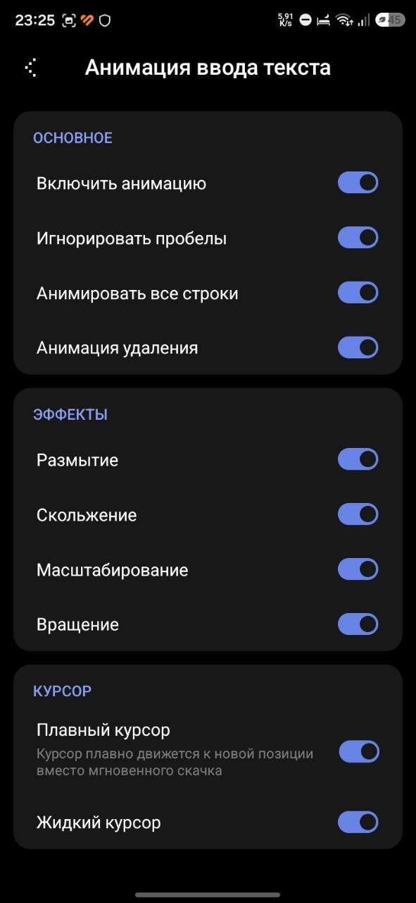
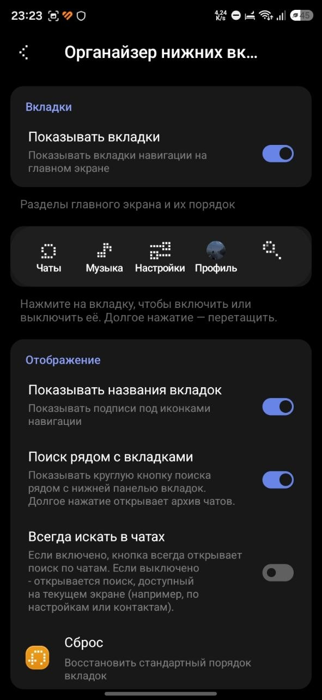
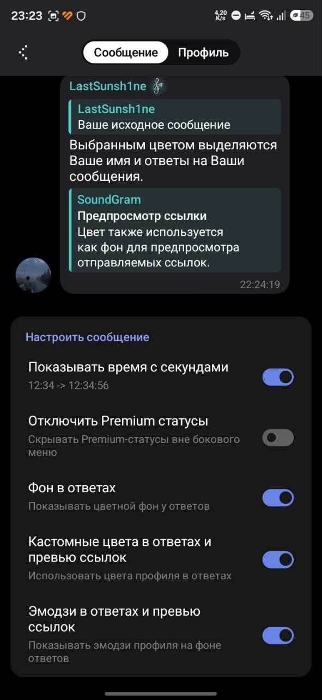
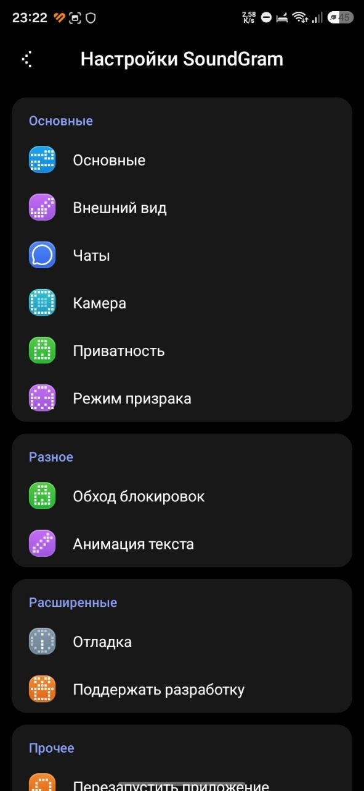
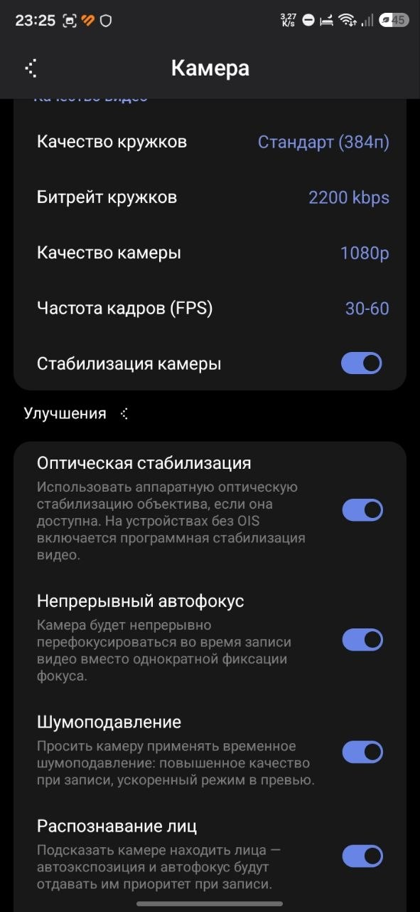
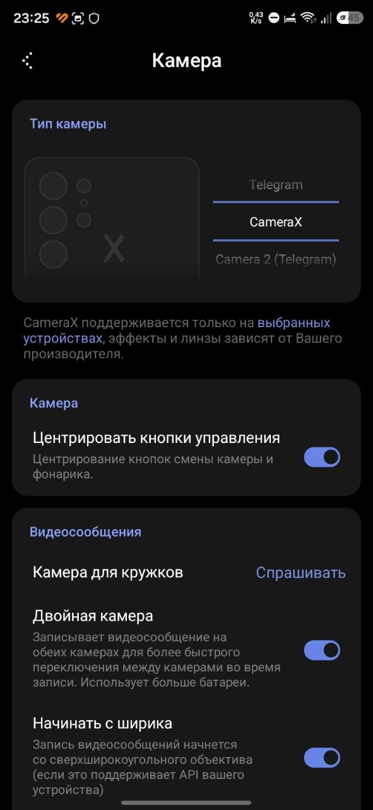

Музыка, кастомизация и свобода в Telegram
Модификация Telegram на базе наработок CherryGram и AyuGram. Полнофункциональный плеер с эквалайзером, встроенный WebSocket-обход блокировок и глубокая настройка каждого элемента интерфейса.

Аудиоплеер уровня отдельного сервиса
Листайте карусель со всеми экранами раздела музыки: от полноэкранного плеера до графического эквалайзера и «Моей волны».
SoundGram Bypass
Модифицированный и оптимизированный tgws-proxy, встроенный прямо в приложение. Свободная работа без блокировок и без сторонних VPN.

Принцип работы: Оптимизированный tgws-proxy
SoundGram Bypass — это глубоко модифицированная и оптимизированная реализация tg-ws-proxy, встроенная непосредственно в ядро клиента. Приложению не требуются внешние прокси-серверы, ключи или VPN-приложения.
Локальный туннель на устройстве (127.0.0.1:1443)
Клиент запускает изолированный легковесный сервис на смартфоне. Все пакеты Telegram упаковываются в WebSocket-сессии с TLS-маскировкой.
Обход DPI без транзитных серверов
Для систем глубокого анализа пакетов (ТСПУ / DPI операторов) подключение неотличимо от стандартного HTTPS-трафика. Никаких замедлений и разрывов связи.
Минимальный пинг к дата-центрам Telegram
В отличие от обычных VPN, трафик не перенаправляется через посторонние серверы в других странах — пинг остается минимальным, а голосовые звонки звучат без задержек.
Экономия аккумулятора и безопасность
Микро-демон не создает тяжелый системный TUN/VPN-интерфейс, сохраняя заряд батареи и не вмешиваясь в работу других приложений вашего телефона.
Полная свобода персонализации
Тонкая настройка каждого пикселя интерфейса Telegram: от движка наборов иконок до живых видеообоев и анимаций ввода.
Nothing iconpack не предустановлен по умолчанию — это сторонний кастомный пак, который легко устанавливается пользователем в один клик с помощью встроенного движка иконпаков (Iconpack Engine). Вы можете применить любой поддерживаемый набор иконок по вашему вкусу.

Движок иконпаков (Iconpack Engine)
Установка любых кастомных наборов иконок: поддержка наборов от exteragram, Nothing, Liquid Glass, Solar, Plumpy и сторонних APK/ZIP файлов.

Обои в списке чатов & Видеообои 24 FPS
Устанавливайте изображения из памяти фоном всего списка диалогов и зацикленные видеоролики с частотой до 24 FPS внутри любых переписок с регулировкой размытия.

Анимация набора и жидкий курсор
Эффекты размытия, скольжения, вращения и масштабирования при наборе и удалении букв, а также ультраплавный и жидкий курсор в строке сообщения.

Органайзер нижних вкладок и папок
Свободный drag-and-drop порядок разделов (Чаты, Музыка, Настройки, Профиль), перенос панели папок в нижнюю часть экрана и скрытие неиспользуемых элементов.

Секунды во времени и стиль цитат
Точное время отправки с секундами (12:34:56), кастомные акцентные цвета в ответах и превью ссылок, скрытие хвостиков облачков и эмодзи профиля на фоне.

Единый хаб настроек SoundGram
Специальный структурированный раздел в настройках: быстрый доступ к параметрам музыки, обхода, внешнего вида, приватности и камеры без блуждания по меню.
Мощь AyuGram и защита переписок
Полный контроль над вашей приватностью: режим призрака, защита от удаления сообщений и аппаратная биометрия.
Полная невидимость в сети
- Не читать сообщения: читайте диалоги без отправки галочек о прочтении собеседнику.
- Скрытие онлайна: статус «В сети» не обновляется при открытии приложения.
- Скрытие набора текста: статус «печатает...» никогда не отображается.
- Анонимные истории: просмотр Stories без появления в списке зрителей.
Сохранение удаленок и правок
- Сохранение удаленных сообщений: текст остается в чате со значком корзины.
- Сохранение удаленных медиа: фото, видео и голосовые не исчезают из памяти.
- История редактирования: просмотр исходного текста до правок собеседника.
- Локальная база данных: надежное изолированное хранение на вашем телефоне.
Защита избранного и архива
- Защита «Избранного»: биометрическая блокировка или пароль на личные заметки.
- Скрытые чаты: защита секретных диалогов и архива по отпечатку пальца.
- Экстренный код доступа: альтернативный PIN-код на случай принудительного разблокирования.
- Скрытие спонсоров: отключение рекламы прокси и навязчивых каналов.
Видеокружки 60 FPS в 1080p
Качественная съемка видеосообщений с оптической стабилизацией и поддержкой двух камер.

CameraX: 1080p, 60 FPS & OIS
Запись видеосообщений в повышенном разрешении до 1080p с частотой 60 кадров/сек и битрейтом до 2200 kbps. Непрерывный автофокус и поддержка аппаратной оптической стабилизации (OIS).

Двойная камера и старт с ширика
Возможность одновременной записи с фронтальной и основной камеры, автозапуск записи видеосообщений со сверхширокоугольного сенсора и плавный жестовый зум.
Команда и источники
Проекты и авторы, благодаря которым SoundGram дарит максимум возможностей каждому меломану.
LastSunsh1ne
Lead Developer & Creator
Создатель модификации SoundGram, интеграция музыкального плеера, адаптация tgws-proxy обхода и оптимизация сборки.
Связаться @im3ffAyuGram Core
Privacy & Ghost Engine
Сохранение удаленных сообщений, медиафайлов, история правок и модули режима призрака.
Канал AyuGramSoundGram Community
Melomans & Testers
Наши пользователи и тестеры, предлагающие свежие идеи, находящие баги и помогающие клиенту становиться лучше.
ПрисоединитьсяПоддержите разработку SoundGram
Клиент развивается на чистом энтузиазме. Любой посильный донат помогает выпускать обновления, оплачивать сервера и развивать функционал!
Банковская карта / СБП
Прямой перевод без комиссии
Перевод по номеру карты через любой мобильный банк.
Telegram Send / Wallet
Моментально через бота Telegram
Удобный и мгновенный способ перевода через официальный Telegram Send бот для пользователей из любых стран.
Поддержать в TelegramСтраница на Boosty
Разовый донат или подписка
Поддержите проект через платформу Boosty удобным способом с любой карты или электронного кошелька.
Перейти на BoostyСкачать SoundGram
Один универсальный файл для процессоров ARM. Скачивайте прямо сейчас или подписывайтесь на официальный канал.
SoundGram v12.10.5 (Release)
Универсальный APK-файл включает нативные библиотеки для архитектур ARM64-v8a и ARMv7 (armeabi-v7a). Сборка под x86 не производится.
Перед установкой убедитесь, что в настройках безопасности включена возможность установки приложений из внешних источников.